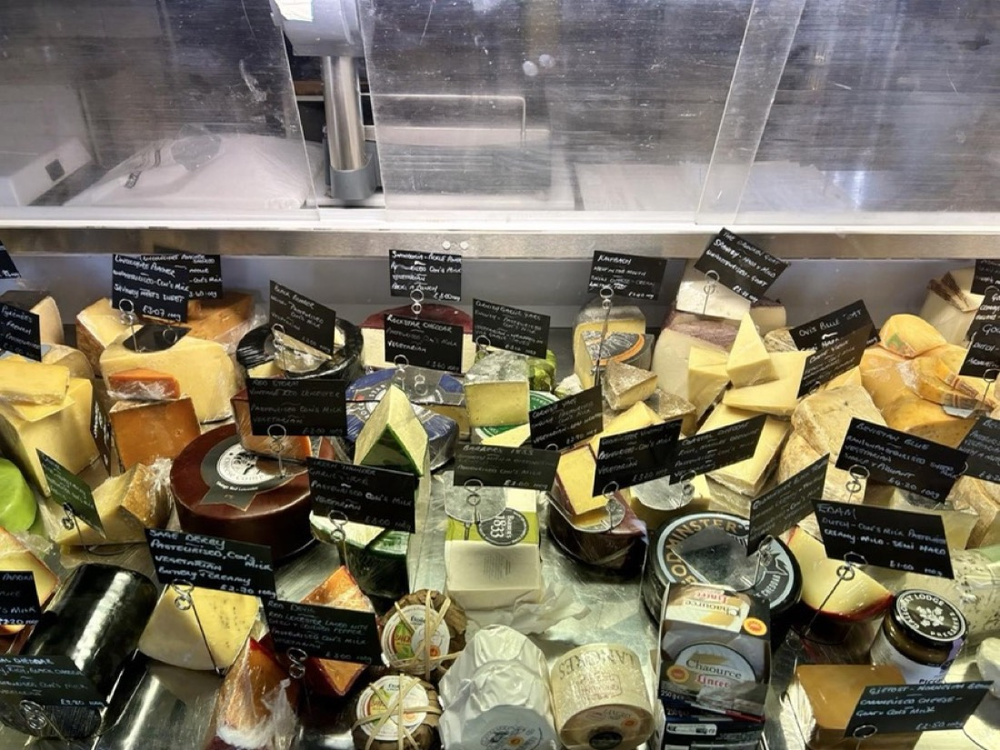
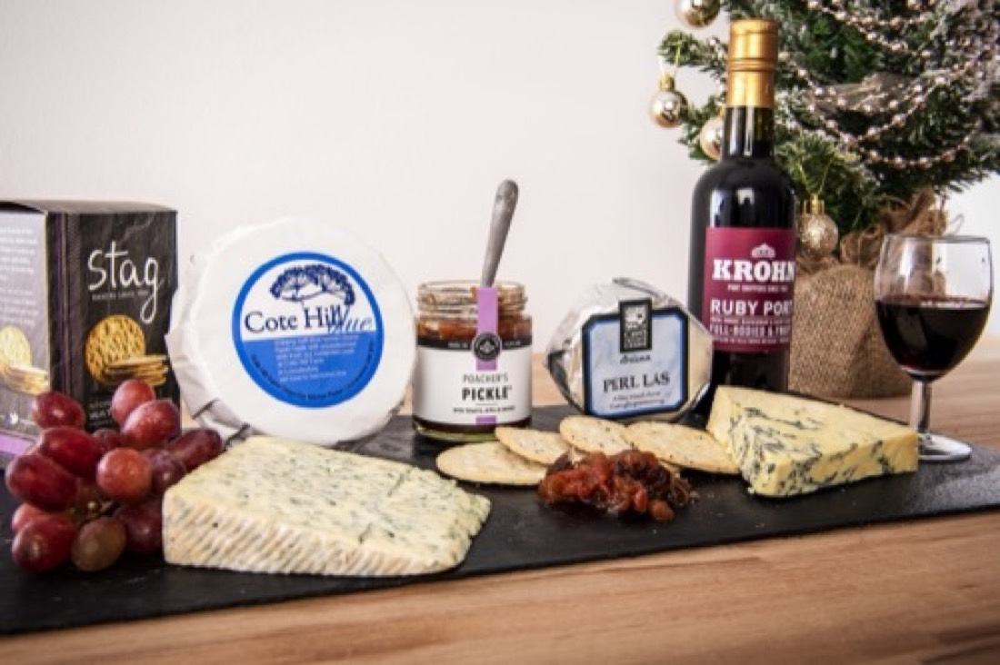
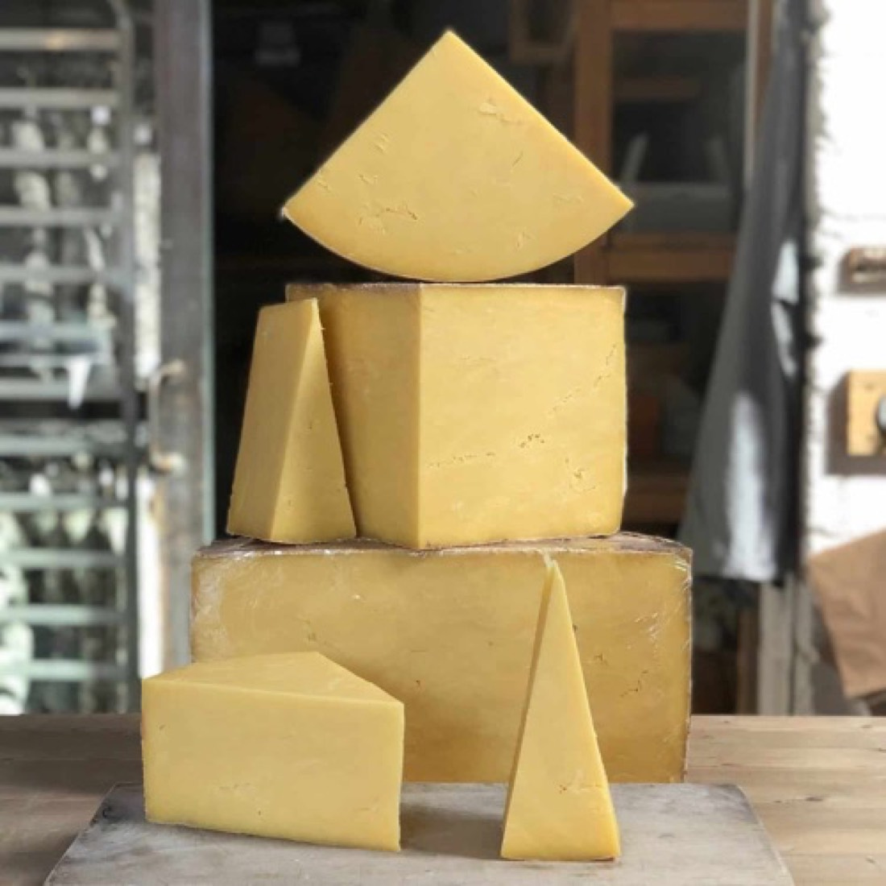
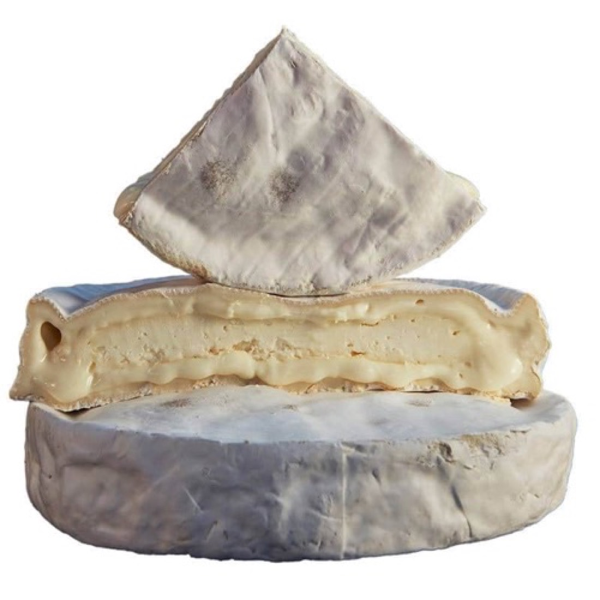
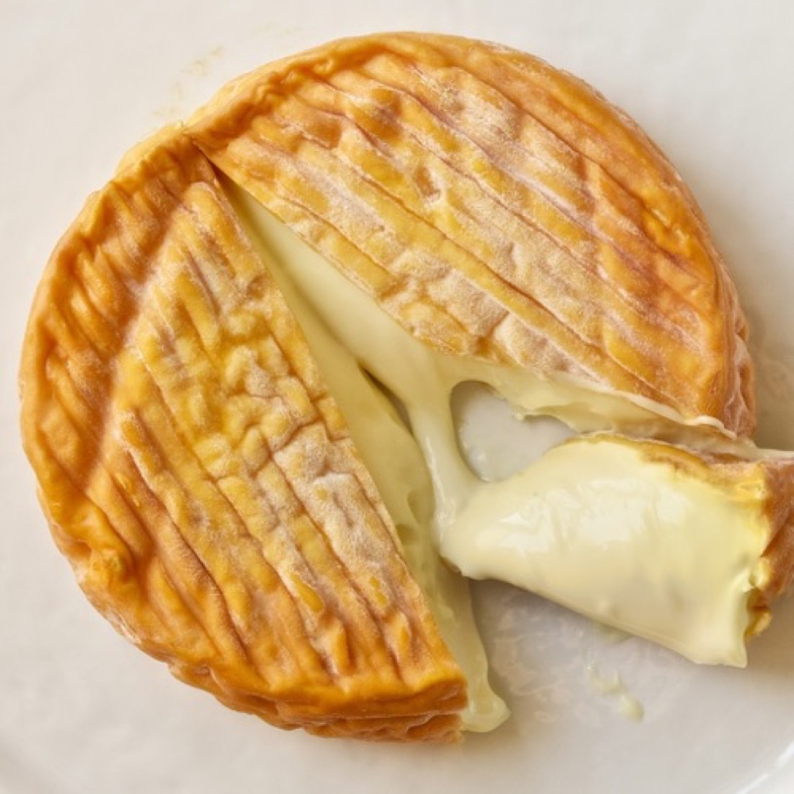
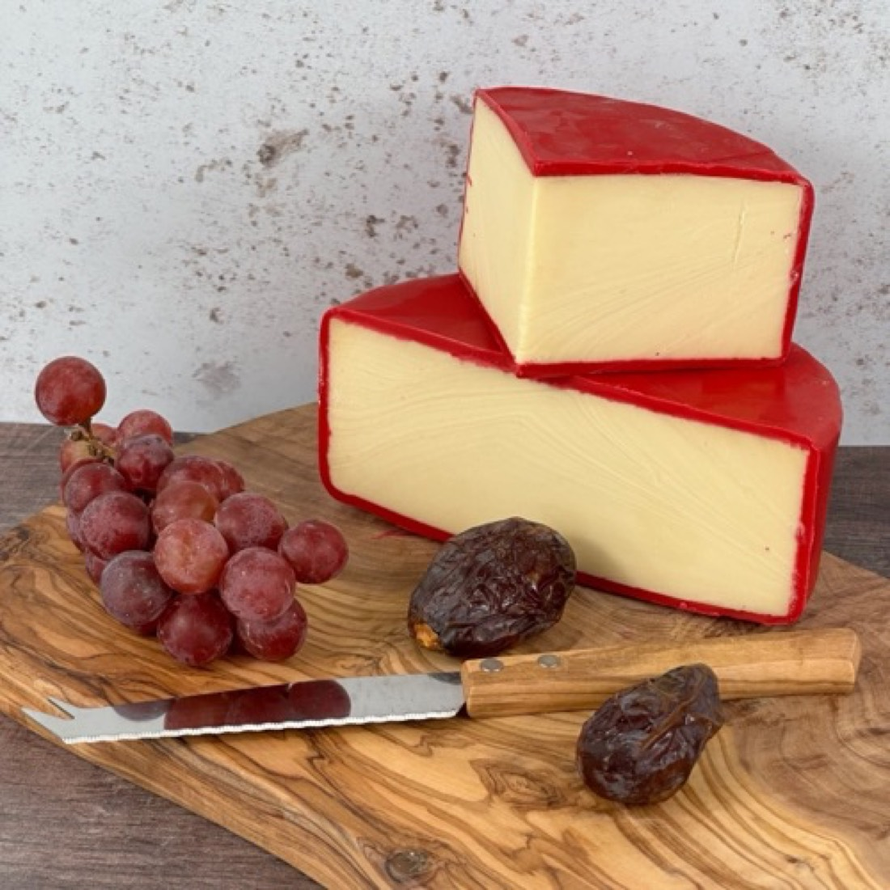
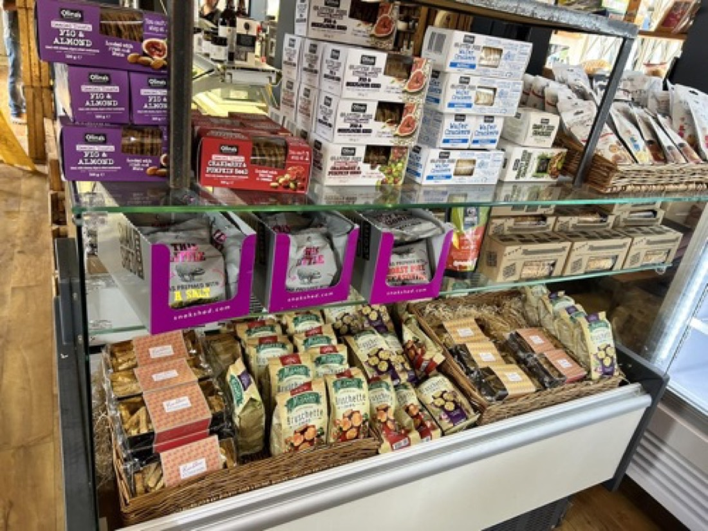

The counter, browsable
Our Cheese
Over 130 cheeses cross our counter through the year — farmhouse British classics, proper continentals, and the odd glorious oddball. Cut to order, wrapped in wax paper.


Blue
10 on the boardBarkham Blue1kg£40.00
Bath BlueBath200g£8.60
Cropwell Bishop Blue StiltonCropwell Bishop, Nottinghamshire200g£5.80
Beauvale200g£7.50
Harrogate BlueYorkshire180g£7.80
Oxford BlueOxfordshire200g£7.50
Picos BluePicos de Europa, Spain200g£7.80
Devon BlueDevon£8.75
Perl LasWales£6.85
Cote Hill Blue350g£10.00

Hard
14 on the boardOld Winchester250g£7.25
Comte Vieux PrestigeFrance500g£17.75
Pitchfork Cheddarfrom £7.10
Westcombe Cheddar250g£7.25
Gorwydd Caerphilly200g£7.50
Sparkenhoe Red LeicesterLeicestershirefrom £8.00
ManchegoSpain200g£7.25
GruyèreSwitzerland200g£7.90
Kaltbach CreamySwitzerland200g£8.00
Kaltbach TruffleSwitzerland200g£11.00
Lancashire BombLancashire230g£8.95
Laphroaig Whiskey CheddarScotland200g£6.25
Wookey Hole Cave Aged CheddarSomerset200g£5.90
Godminster Black Truffle Cheddar200g£7.95

Soft
10 on the boardBaron Bigod Briefrom £9.50
Baron Bigod Black Truffle250g£22.00
Brillat SavarinFrance500g£21.00
EpoissesBurgundy, France£13.00
St Jude95g£7.90
Mont d’Or VacherinJura, Francebaby£16.50
Bath SoftBath250g£10.00
Somerset BrieSomerset200g£5.45
Wigmore180g£7.00
Perl Wen miniWales200g£6.95

Washed Rind
6 on the boardStinking Bishopfrom £11.90
Murcia al VinoMurcia, Spain200g£7.60
Merry Wyfe of BathBath350g£10.50
St Cera95g£8.60
Tomme de Chèvre Cendréefrom £10.80
Coeur de NeufchâtelNormandy, France£6.99

Vegetarian
A good share of the counter is made with vegetarian rennet. Four favourites below — ask at the counter and we’ll point out the rest.
Barkham Blue1kg£40.00
WensleydaleYorkshire200g£5.50
Ribblesdale Goat LogYorkshire100g£4.50
Old Winchester250g£7.25

Vegan
The smallest board in the shop — but a proper one, with crackers to match.
Tyne Chease Original100g£8.50
Tyne Chease Applewood100g£8.50
Tyne Chease Pink Peppercorn100g£8.50
Tyne Chease Garlic100g£8.50
Peter’s Yard Rosemary Crackers90g£3.40
To go with it
Accompaniments
- Peter’s Yard crackers £3.40
- Galloway Lodge chutneys from £4.75
- Bedfordshire Honey £9.50
- Pâtés from £4.95
- Andalus olive oil 500ml £21.00
Find usThe Barn, Summerhill Farm, Cople Road, Cardington MK44 3SH
TodayTue–Sat 9am–4pm · Sun 9am–3pm
Call the counter01234 831 890
Plan your visit